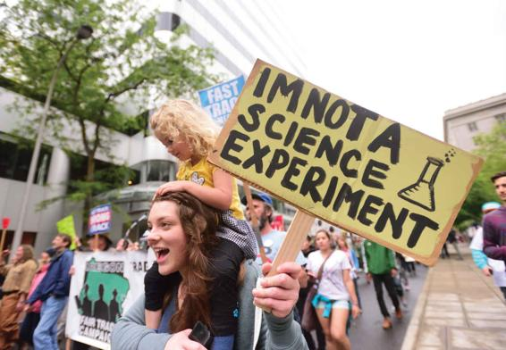
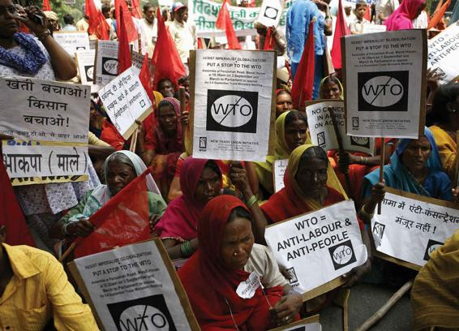

Beck and other scholars have identified risk as one of the main outcomes of globalization and technological advance. Yet globalization is generating other important challenges because its effect is differential—and some of its consequences are not benign. Next to mounting ecological problems, the expansion of inequalities within and between societies is one of the most serious challenges facing the world today.
The majority of the world’s wealth is concentrated in the industrialized countries of the global north, whereas countries in the global south suffer from widespread poverty, overpopulation, inadequate educational and health care systems, and crippling foreign debt. The disparity between the global north and the global south widened steadily over the course of the twentieth century and is now the largest it has ever been. A recent report on global wealth shows that global inequality is at extreme levels. Taken together, the bottom half of the global population own less than 1 percent of total wealth. In sharp contrast, the richest 10 percent hold 82 percent of the world’s wealth, and the top 1 percent alone account for 45 percent of global assets (Shorrocks et al., 2019). Thought of another way, in 2019, just 26 people owned the same wealth as the 3.8 billion people who make up the poorest half of humanity (Oxfam, 2019).
Demonstrators march in the streets of Portland, Oregon, as part of an international protest against Monsanto and the use of GMOs.
These vast disparities in economic well-being are all the more jarring when daily income is considered. A recent study from the Brookings Institute shows that at the end of 2019, approximately 600 million people are living in extreme poverty; that is, they live on less than $1.90 per day. This is largely due to reduction of poverty in India. Although the proportion of persons who live under such dire circumstances has decreased markedly over the last three decades—from 44 percent in 1981 to 10.7 percent in 2013—the absolute numbers living in abject poverty remain high because the populations in these poor nations are so large. Further, about 70 percent of the world’s poor live in Africa. Extreme poverty is clustered in sub-Saharan Africa, which accounts for half of the world’s extreme poor (Brookings, 2019).
In much of the global south, levels of economic growth and output over the past century have not kept up with the rate of population growth, whereas the level of economic development in industrialized countries has far outpaced it. These opposing tendencies have caused a marked divergence between the richest and poorest countries. North America has the largest share of global wealth (31 percent). China, on the other hand, accounts for more than 21 percent of the global adult population but only 17 percent of total wealth. And for Africa and India, the population share surpasses the wealth share by multiples greater than 10 and 5, respectively (Shorrocks et al., 2019).
Globalization seems to be exacerbating these trends by further concentrating income, wealth, and resources within a small core of countries. The expansion of global trade has been central to this process. Global trade in goods and services has increased by nearly 60 percent in the last decade, from $13 trillion in 2005 to nearly $19.5 trillion in 2016 (UNCTAD, 2019). The volume of merchandise exports in 2018 exceeded $19.5 trillion—up from $10.6 trillion in 2005. The volume of service exports in 2018 was nearly $5.8 trillion, or 6.4 percent of total global output—up from $2.6 trillion in 2005 (World Bank, 2017e; UNCTAD, 2019). Only a handful of countries in the global south have managed to benefit from the overall rapid growth, and the process of integration into the global economy has been uneven. Some countries—such as the East Asian economies, Chile, India, and Poland—have fared well, with significant growth in exports. Other countries—such as Algeria, Russia, Venezuela, and most of sub-Saharan Africa—have seen few benefits from expanding trade and globalization (UNDP, 2006). There is a danger that many of the countries most in need of economic growth will be left further behind as globalization progresses.
Many scholars see free trade as the key to economic development and poverty relief. Organizations such as the WTO work to liberalize trade regulations and reduce trade barriers. Free trade across borders is viewed as a win-win proposition for countries in both the global north and south. While the industrialized economies are able to export their products to markets worldwide, it is claimed that countries in the global south will benefit by gaining access to world markets. This, in turn, would improve their prospects for integration into the global economy. But many are now challenging this belief, since free trade has also resulted in the loss of millions of U.S. jobs to low-wage countries.
The Campaign for Global Justice
Not everyone agrees that free trade is the solution to poverty and global inequality. In fact, many critics argue that free trade is a one-sided affair that benefits those who are already well off, leads to massive job loss of industrial workers in advanced economies, and exacerbates poverty and dependency within the global south. During the 2016 presidential primary campaigns, Democrat Bernie Sanders and Republican Donald Trump seemed to agree on just one thing: Free trade agreements such as the proposed Trans Pacific Partnership (TPP) were costing Americans their jobs. President Trump since doubled down on his campaign pledge to rethink all trade agreements: He pulled the United States out of the TPP and renegotiated the North American Free Trade Agreement (NAFTA) with Mexico and Canada. The new agreement was named the United States-Mexico-Canada Agreement (USMCA) and was signed by leaders of the three countries in November 2018 (Office of the U.S. Trade Representative, 2020).
Recently, much of this criticism has focused around the WTO, which is at the forefront of efforts to increase global trade. In 1999, more than 50,000 people from around the world took to the streets of Seattle to protest during the WTO’s Millennium Round of trade talks. Trade unionists, environmentalists, human rights campaigners, antinuclear activists, farmers, and representatives from hundreds of local and international nongovernmental organizations joined forces to voice their frustration with the WTO—an organization many see as favoring economic imperatives over all other concerns, including human rights, labor rights, the environment, and sustainable development. Negotiators from the WTO’s 134 member states—the number of members has since risen to 164—had come together to discuss measures to liberalize conditions for global trade and investment in agriculture and forest products, among other issues. Yet the talks broke off early with no agreements reached. The organizers of the protests were triumphant—not only had the demonstrations succeeded in disrupting the talks, but internal disputes among delegates had also surfaced. The Seattle protests were heralded as the biggest victory to date for campaigners for global justice. Since that time, every ministerial meeting of the WTO has faced massive demonstrations by those excluded from the processes of setting the rules for global trade.
Does this campaign represent the emergence of a powerful anti-globalization movement, as some commentators have suggested? Protesters in other cities, such as London and Washington, D.C., argue that free trade and economic globalization further concentrate wealth in the hands of a few, while increasing poverty for the majority of the world’s population. Most of these activists agree that global trade is necessary and potentially beneficial for national economies, but they claim that it needs to be regulated by different rules: trade rules oriented toward protecting human rights, the environment, labor rights, and local economies—not toward ensuring larger profits for already rich corporations.
The protesters claim that the WTO is an undemocratic organization dominated by the interests of the world’s richest nations, particularly the United States. Although the members of the WTO include many countries in the global south, many have no influence over the organization’s policies because the richest nations set the agenda. Poorer nations have fewer resources, in terms of money and trained personnel, to confront the highly complex issues related to international trade. The president of the World Bank has pointed out that 19 of the 42 African states that are members of the WTO have little or no representation at its headquarters in Geneva (World Bank, 2000).
Such imbalances have very real consequences. For example, although the WTO has insisted that countries in the global south open their markets to imports from industrialized countries, it has allowed industrialized countries to maintain high barriers to agricultural imports and provide vast subsidies for their domestic agriculture production to protect their own agricultural sectors. Between 1995 and 2014, the U.S. government spent $322 billion on subsidies to boost the income of crop and livestock farmers (Environmental Working Group, 2016). In 2019 alone, the USDA gave $19 billion in subsidies to farmers (NPR, 2019). For certain crops, like sugar and rice, agricultural subsidies amount to as much as 80 percent of farm income (Stiglitz, 2007). The EU spends $65 billion each year on their farmers, and the farm budget takes up to 40 percent of the EU’s yearly expenditure (New York Times, 2019). In fact, the average European cow gets a subsidy of approximately $2 a day; more than half of the people in the global south live on less than that amount (Stiglitz, 2007). This means that the world’s poorest (and predominantly agricultural) countries do not have access to the large markets for agricultural goods in industrialized countries.
Workers in New Delhi participate in an anti-WTO protest. What are some of the criticisms leveled at the WTO?
This issue has confounded the expansion of WTO rules covering trade in services, foreign investment, government procurement, and other areas. Beginning with the 2003 WTO ministerial meeting in Mexico, the “Group of 21” countries in the global south, led by Brazil and India, have refused to consider the expansion of WTO rules until the United States and the EU eliminate subsidies for agriculture production and allow greater access to other agriculture markets, such as cotton. The issue of agriculture subsidies still has not been resolved. A group of countries in the global south, again led by Brazil, won two major disputes at the WTO over subsidies for European sugar and American cotton. Despite these rulings, the issue of illegal subsidies Europe and the United States use to support their farmers continues to hamper WTO ministerial meetings.
A similar divide exists over the protection of intellectual property rights—an issue monitored by a WTO multilateral agreement called TRIPS (Trade-Related Aspects of Intellectual Property Rights). In 2016, high-income countries accounted for more than 50 percent of patent applications. Just five patent offices (United States, China, Japan, South Korea, and the European patent office) accounted for nearly 84.5 percent of patent applications (World Intellectual Property Organization, 2018). The concept of intellectual property rights, however, is alien to the global south. Recently, there has been a significant increase in the number of patent claims as biotechnology companies and research institutes push to control and “own” more forms of knowledge, technology, and biodiversity. Many samples of plant material, for example, have been taken from biodiverse areas such as rain forests and developed by pharmaceutical companies into profitable—and patented—medicines. Local knowledge about the medicinal uses of the plants is often used in developing and marketing the medicines, yet the indigenous people receive no compensation for their contribution. As industrialized countries within the WTO push to strengthen intellectual property laws, many people in the global south argue that such a move works against the needs of their countries. Research agendas are dictated by profit interests, not human interests, and valuable forms of technology may end up inaccessible to poorer countries that could benefit from their use.
Another criticism of the WTO is that it operates in secret and is not accountable to citizens who are affected by its decisions. In many ways, this criticism is valid. Trade disputes between members of the WTO are decided behind closed doors by a committee of “experts” who are appointed rather than elected. When a decision is handed down, it is legally binding on all member states and enforceable through a mechanism that authorizes WTO member nations to enact punitive trade policies unless the losing nation complies with the decision.
The WTO can also challenge or override laws that are seen as barriers to trade. This includes national laws or bilateral agreements designed to protect the environment, conserve scarce resources, safeguard public health, or guarantee labor standards and human rights. For example, the WTO has ruled against the EU’s ban on U.S. hormone-treated beef (because of its possible links to cancer) and has challenged a law passed in Massachusetts that prohibits companies from investing in Myanmar (Burma) because of its government’s human rights violations. In another instance, the United States and the EU attempted to use the TRIPS provision to block the importation of inexpensive generic HIV/AIDS medication into countries in sub-Saharan Africa, whose populations are being devastated by this epidemic. This move produced worldwide public outrage, which forced the WTO to reconsider its rules that regulate patent rights when public health is at stake.
A final concern is the undue influence the United States wields over the activities of the WTO and other international bodies such as the World Bank and the International Monetary Fund. With its overwhelming economic, political, and military might, the United States is able to influence debates and decision making in many international institutions. The unevenness of globalization in part reflects the fact that political and economic power is concentrated in the hands of a few core states. Even as the United States influences the WTO, the United States is also subject to the WTO’s rules and decisions. In fact, the United States almost always loses when it is forced to defend its trading practices before a WTO appellate panel (Conti, 2008). For example, in 2003, the WTO determined that high tariffs placed on imports of steel into the United States violated the rights of WTO member nations. Under heavy pressure from its trading partners, the United States eventually rescinded the tariffs and complied with WTO law. This example highlights a tension between the nature of power and the processes of globalization: Can we expect the world’s sole superpower to play by the rules when the rules go against the interests of that superpower? What effect will this tension have on the creation of a just and equitable global legal and political system?
CONCEPT CHECKS
How has technology facilitated the compression of time and space?
What are the three causes of increasing globalization?
What effect does globalization have on our everyday lives?
Why is globalization associated with new forms of risk? What are the new forms of risk?
Briefly describe the debate over the role that free trade plays in global inequality.